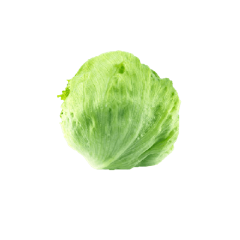

Nuestras Frutas y Verduras

Información:
- Es rica en fósforo, el cual vigoriza las mentes y cuerpos cansados.
- Es muy útil para eliminar los cólicos y favorece la digestión.
- Es un vegetal diurético que evita la retención de líquidos.
Recetas

Información:
- Previene Enfermedades hepáticas, obesidad, ayuda a combatir cáncer de mama, de esófago, de matriz, de colon, de páncreas y próstata.
- También se utiliza para prevenir la diabetes, enfermedades cardiovasculares, cataratas y asma

Información:
- Aporta muy pocas calorías por su alto contenido en agua y su escasa cantidad de hidratos de carbono, proteínas y grasas
- Vitamina C, folatos y provitamina A


Información:
- Contiene ácido Omega-3, más que cualquier verdura.
- Aporta vitamina A, B y C.
- Aporta magnesio, calcio, potasio y hierro.
- Ayuda contra el estreñimiento y la inflamación de las vías urinarias.
Información:
- Ricas en fibra, antioxidantes, vitaminas y minerales
- Nutrientes Clave
- Proteinas